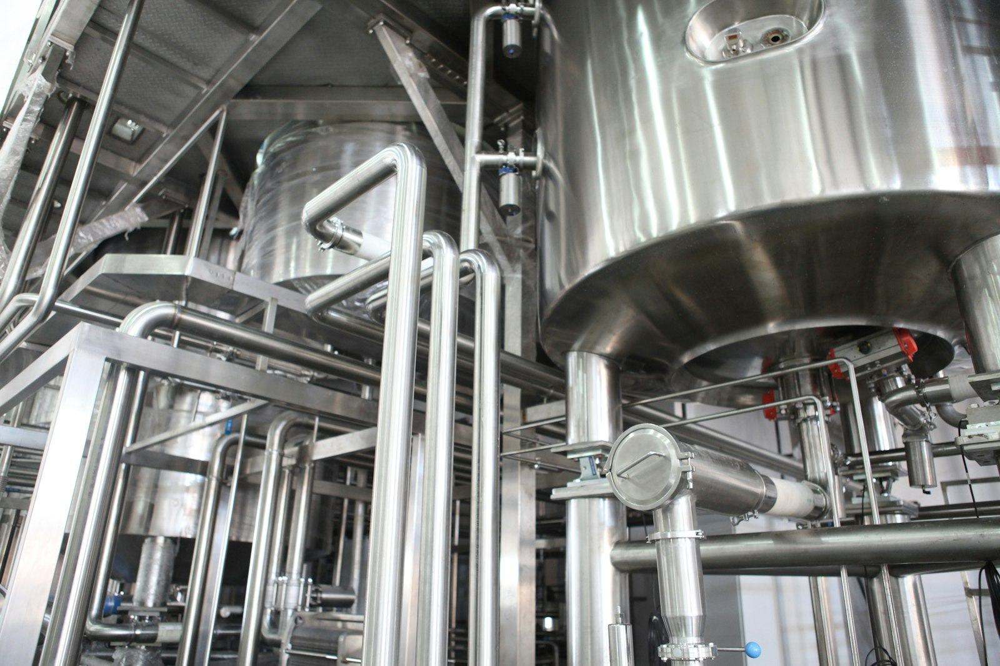
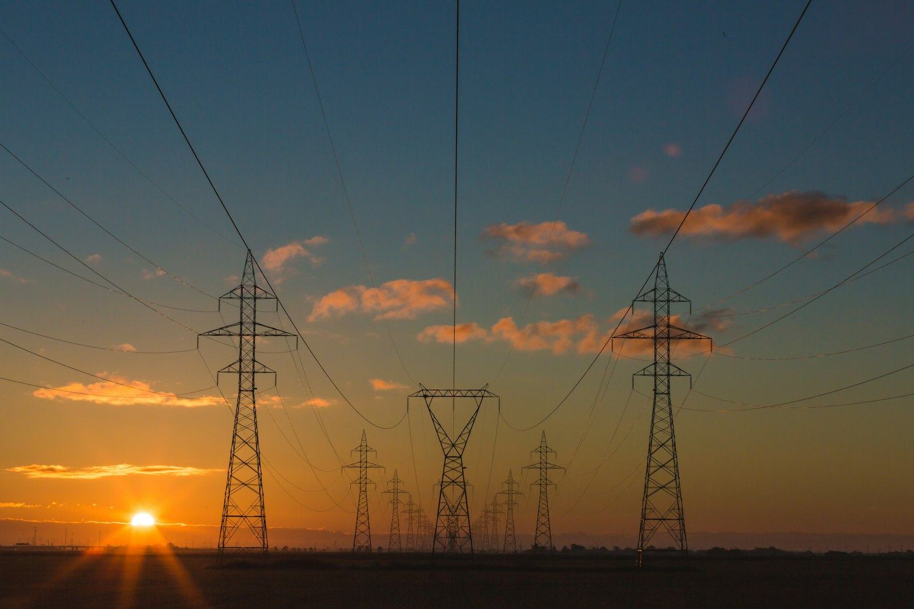

AI and IoT systems, engineered end-to-end for cities, factories and utilities.
Fieldline is an Egypt-based systems integrator. We survey the site, design the system, deploy the sensors, gateways and platform, and keep it running: one responsible team from first visit to daily operation.
- Vendor-neutral hardware
- Cloud or on-premise
- Support after handover
Who we serve
Three kinds of client, one question each: what should be connected, and what do you get once it is.
-
Cities & municipalities
- What gets connected
- Traffic signals, street lighting, parking, waste collection, air and noise sensors.
- What you get
- One operations view of the district, alerts before complaints, and data you can plan with.
-

Industrial & factories
- What gets connected
- Machines, production lines, energy meters, compressors, cold rooms and environmental conditions.
- What you get
- Downtime seen before it happens, energy per unit produced, and audit-ready records.
-

Utilities & infrastructure
- What gets connected
- Substations, pumping stations, pipelines, meters and unmanned remote sites.
- What you get
- Remote monitoring without site visits, loss and leak detection, and crews dispatched on evidence.
What we deploy
Four system types we design and build. Each is specified the same way: what senses, how it connects, where the data lives, and what changes for you.
-
Traffic & urban systems
Signal timing that responds to real flow, and a live picture of congestion for the control room.
- Sensors
- Vehicle counters, cameras, signal controllers
- Connectivity
- Fibre, 4G/5G
- Platform
- Cloud or municipal data centre
- Outcome
- Adaptive signal plans, congestion reporting
-
Industrial monitoring & predictive maintenance
Machine health from vibration, temperature and current, so stops are planned instead of emergencies.
- Sensors
- Vibration, temperature, current, PLC data
- Connectivity
- Industrial Ethernet, LoRaWAN
- Platform
- Edge processing + cloud analytics
- Outcome
- Failure alerts days ahead, maintenance on evidence
-
Energy & utility metering
Consumption per site, per line or per building, with losses and leaks flagged automatically.
- Sensors
- Smart meters, flow meters, power-quality analysers
- Connectivity
- NB-IoT, LoRaWAN
- Platform
- Metering head-end + dashboards
- Outcome
- Loss detection, billing-ready data
-
Smart buildings & compounds
Access, HVAC, lighting, water and gates on one facility dashboard, controllable remotely.
- Sensors
- Access control, HVAC, lighting, tank levels, gate cameras
- Connectivity
- Wi-Fi, BACnet, Zigbee
- Platform
- Building management dashboard
- Outcome
- Lower energy bills, remote control, incident logs
How a project runs
Four stages, in order. You know what happens next at every point, and what it costs before it starts.
-
Survey
We visit the site, map what exists (assets, networks, power) and agree what to measure and why.
-
Design
Bill of materials, network plan, platform architecture and a fixed-scope proposal. Hardware is chosen for the site, not the catalogue.
-
Deploy & integrate
Installation, commissioning, integration with existing SCADA, ERP or GIS, and acceptance tests against the agreed metrics.
-
Operate & support
Monitoring, maintenance, training for your team, and handover documentation in English and Arabic.
Selected work
Projects are listed with the sector, what was deployed and the measured result.
-
Project name
- Sector
- Sector
- Deployed
- What was installed and integrated
- Result
- Measured outcome
-
Project name
- Sector
- Sector
- Deployed
- What was installed and integrated
- Result
- Measured outcome
-
Project name
- Sector
- Sector
- Deployed
- What was installed and integrated
- Result
- Measured outcome
Capabilities
The layers of every system we build, and what we take responsibility for in each.
-
Devices & sensors
Selection, procurement, installation and calibration for the conditions on site.
-
Connectivity & edge
LoRaWAN, NB-IoT, 4G/5G, fibre and industrial Ethernet; edge gateways that keep working when the link drops.
-
Cloud & data platform
Time-series storage, device management and secure access, hosted in the cloud or on your premises.
-
AI analytics
Anomaly detection, forecasting and computer vision for traffic, safety and machine health.
-
Dashboards & integration
Operations views and alerts, with APIs into the SCADA, ERP and GIS systems you already run.
-
Maintenance & support
Service agreements, spare parts, remote diagnostics and training for your operators.
Partners & technology
- Partner logo
- Partner logo
- Partner logo
- Partner logo
- Partner logo
- Partner logo
Request a quote
Tell us about the site and what you want to measure or control. We reply with next steps and a site-survey proposal.